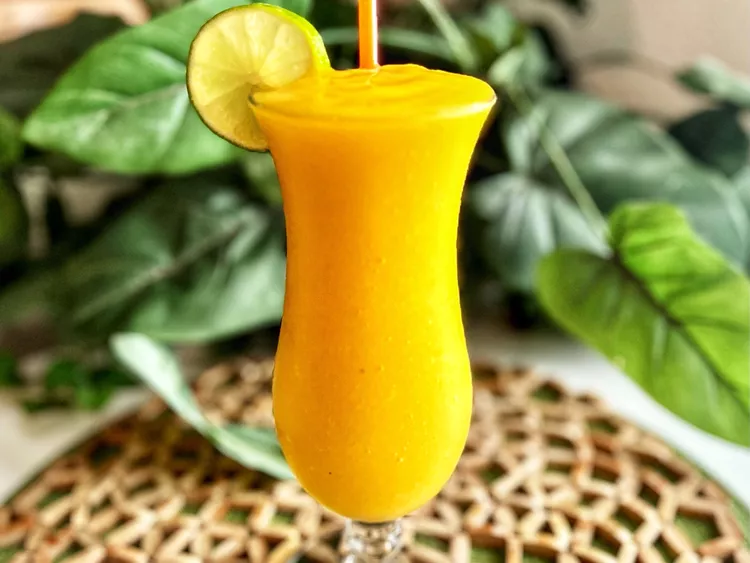

Mango Daiquiri

Description
For this quick and easy mango daiquiri, I like to use frozen mangoes which
eliminates the need for ice and will not water down the drink.
Switch it up and use any frozen fruit you like.
Ingredients
Here is what you will need to make this drink.
- 1 cup frozen mango chunks
- 2 fluid ounces rum
- 2 fluid ounces freshly squeezed lime juice
- 2 fluid ounces agave syrup
Steps
And here is how to make it
-
Place mangoes, rum, lime juice, and agave syrup in blender cup and blend until smooth.
-
Serve in a chilled glass and enjoy